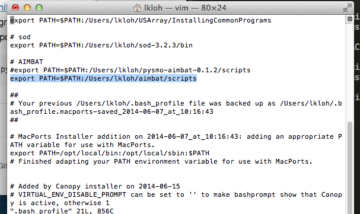
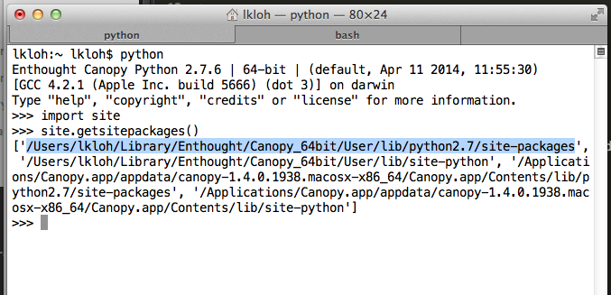

4. Upgrading AIMBAT¶
4.1. Getting the latest version¶
The latest version of AIMBAT, currently version 0.1.3, is hosted on the pysmo repository on Github. We will periodically be making updates to it.
To upgrade AIMBAT, first delete the old AIMBAT files on your computer.
Next, download the newest version of AIMBAT and SAC from github. Now, cd into the newest AIMBAT folder and run:
sudo python setup.py build --fcompiler=gfortran
sudo python setup.py install
Also, cd into the newest SAC folder and run:
sudo python setup.py build
sudo python setup.py install
Now, go to the .profile file and add the scripts folder in the new AIMBAT version to your path.
4.2. Possible Issues¶
Some users have reported errors with upgrading. If there are any problems running the updated AIMBAT, try the following:
<<<<<<< HEADGet the location of the python site-packages directory by typing the following into the python console:
Get the location of the python site-packages directory by typing the following into the python console:
>>>>>>> 61f04900b8ba7c296195805632639c367cf8a575import site
site.getsitepackages()
The path to the site packages directory is highlighted in the figure below.
 <<<<<<< HEADcd into the site-packages directory and remove all the folders with the word pysmo in their names by typing:
cd into the site-packages directory and remove all the folders with the word pysmo in their names by typing:
>>>>>>> 61f04900b8ba7c296195805632639c367cf8a575sudo rm -rf <psymo-folder>
Now, reinstall the new version of AIMBAT.
<<<<<<< HEADIf this still does not work, upgrade your Python libraries as detailed in section 2.7.1 of this manual and reinstall the new verson of AIMBAT.
======= >>>>>>> 61f04900b8ba7c296195805632639c367cf8a575